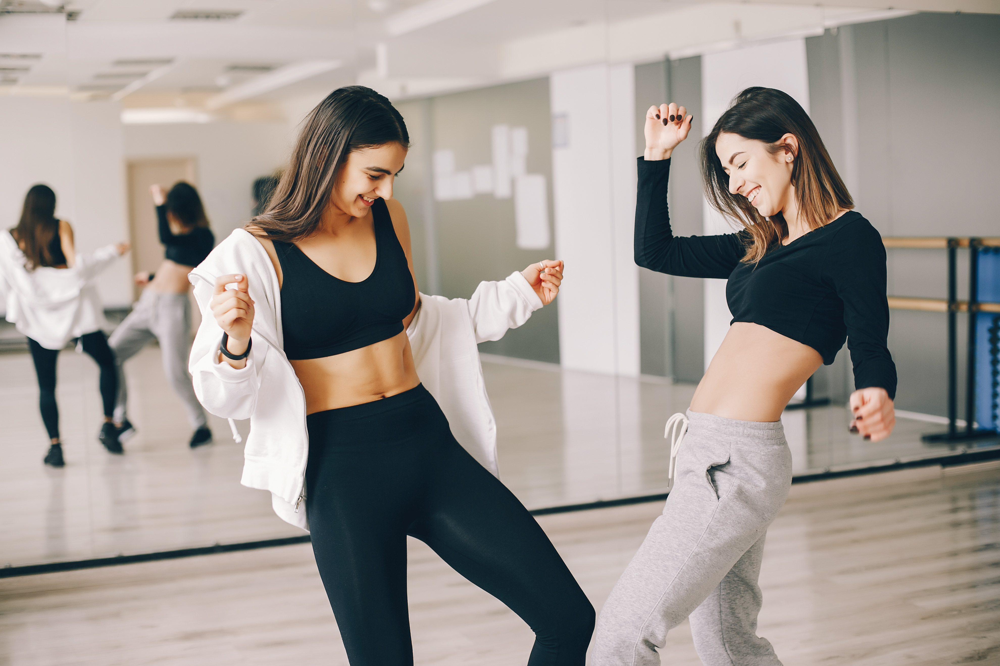

Programme de musculation pour débutant
Aller directement à la partie traitant de :
- 1-1. Renforcer triceps et pectoraux
- 1-2.Renforcer ceinture abdominale, gainage.
- 1-3.Renforcer le dos
Comment bien débuter la musculation ?
Voici quelques conseils de musculation à destination des débutant et des pratiquants confirmés souhaitantaméliorer leur pratique en revoyant les bases de l’entraînement. Il n’est pas toujours évident de commencer la musculation. Dans cet rubrique vous pourrez trouvez des conseils pour bien choisir vos exercices, bien organiser vos séances d’entraînements ou encore construire votre programme de musculation.
Pour cela j’ai 3 conseils simples à vous donner :
1) N’utiliser pas votre téléphone :

Nous vivons dans un monde où nous avons toute notre vie à la portée de nos doigts. Cependant, durant le temps que vous passez à la salle de sport, il faut que vous vous déconnectiez de toutes ses tentations (appels , sms , mail). Donc si vous voulez faire des entrainements intenses et évoluez, vous devez éteindre votre téléphone portable ou bien le passer en mode avion. Je vois de nombreuses personnes qui passent plus de temps à envoyer des sms qu’à s’entrainer. Inutile d’aller à la salle de sport dans ce cas.
2) Ne discutez pas pendant votre training :

Il faut que vous compreniez que chaque entrainement réalisé vous rapproche un peu plus de votre but. C’est pour cela qu’il est nécessaire de mettre le plus d’intensité possible dans celui-ci. Le nombre d’heures passés à vous entrainer n’importe peu. Ce qui compte réelement c’est : Quelle intensité je met dans mon entrainement. Pour cela , garder en tête que vous devez rentabiliser le plus possible votre temps à la salle de sport et que l’entrainement que vous etes en train de réaliser va vous aider à vous rapprocher de votre but. Repenser à vos motivations qui vous ont poussé à entamer ces changements.
3) Pensez que chaque entrainement peut vous faire évoluer.

Il faut que vous compreniez que chaque entrainement réalisé vous rapproche un peu plus de votre but. C’est pour cela qu’il est nécessaire de mettre le plus d’intensité possible dans celui-ci. Le nombre d’heures passés à vous entrainer n’importe peu. Ce qui compte réelement c’est : Quelle intensité je met dans mon entrainement. Pour cela , garder en tête que vous devez rentabiliser le plus possible votre temps à la salle de sport et que l’entrainement que vous etes en train de réaliser va vous aider à vous rapprocher de votre but. Repenser à vos motivations qui vous ont poussé à entamer ces changements.
I-Premiers pas à la musculation
1. Musculation sans matériel ( ou renforcement):
Se muscler sans matériel est possible. Sans appareil de musculation, ni machine, ni équipement ou accessoire spécifique on peut parfaitement développer la force explosive, la condition physique générale et la tonicité de tous les groupes musculaires, mais plus modérement leur volume. Un sportif n'ayant utilisé que son propre poids pour s'entraîner aura des muscles bien dessinés mais peu massifs; plutôt longilignes ils seront plus explosifs que puissants. Il aura de plus de très bonnes qualités d'équilibre et de coordination car il aura naturellement développé sa proprioception et la complémentarité entre muscles stabilisateurs et effecteurs.

- Avant tout exercice, échauffez bien vos articulations avec des mouvements de rotation des poignets, étirements des avant-bras, flexions des jambes, buvez de l'eau. Tous les mouvements d'échauffement se font naturellement sans torsions, il faut laisser votre corps agir.

1-1. Renforcer triceps et pectoraux
Le meilleur exercice simple et efficace vous permettant de commencer à renforcer votre ceinture scapulaire est sans aucun doute les pompes, exercice consistant à abaisser et remonter son corps à la force des bras et sollicitant le grand pectoral, le deltoïde et les triceps.


Toujours un alignement Epaule-Bassin-Pieds ou alignement Epaule-Bassin-Genou pour ceux en difficultés
| Séries | H | F |
|---|---|---|
| 1ere série | 11 | 5 |
| Repos : 2min | ||
| 2eme série | 13 | 6 |
| Repos : 3min | ||
| 3eme série | 15 | 7 |
| Repos : 4min | ||
| 4eme série | 17 | 9 |
| Repos : 5min | ||
| 5eme série | 20 | 0 |
1-2. Renforcer ceinture abdominale, gainage.

Se reporter sur cette image afin d'identifier les zones à travailler, on la nommera "croquis"
► Abdos crunch: Musculation du grand droit (voir croquis). Cet exercice de musculation affine et raffermis la taille si vous travaillez avec le poids du corps.
1 - Exécution de l'exercice :
Position de départ allongé sur le sol ou sur un banc, les lombaires collés au sol, les jambes peuvent être fléchies sur la poitrine, reposer sur un banc ou former un angle de 90 degrés avec les pieds au sol. Enrouler le buste vers l’avant en contractant les abdominaux et en gardant les lombaires collés au sol. Le retour à la position de départ doit être réalisé sans à coups en conservant la contraction et la tension dans le muscle. La vitesse d’exécution est lente et constante. On peut placer un lest sur la poitrine, une rondelle de fonte ou un haltère pour ajouter de la difficulté à l’exercice.


2 - Respiration :
Inspiration en début de mouvement quand la cage thoracique est ouverte. Souffler en exécutant le mouvement.
3 - Consignes de sécurité :
Evitez de placer vos mains derrière la tête car souvent on s'aide de la tête pour faire l'exercice quand on bloque, cela peut entraîner des problèmes au niveau des cervicales. Le plus simple est de maintenir les mains sur les tempes ou sur la poitrine. Ne pas décoller le bas du dos, l'amplitude très réduite n’enlève pas d’efficacité à l’exercice. Il faut travailler les pieds non bloqués, serrés et les genoux écartés, cela limite l'activité du psoas iliaque et du droit antérieur et évite bien des problèmes de dos.
| Homme | Femme |
|---|---|
| 4x20 | 4x10 |
| Repos: 3 min | |
► Obliques (voir croquis):
L'inclinaison latérale basique au sol est un mouvement permettant de travailler les obliques en dynamique simultanément à un travail en isométrique du grand droit de l'abdomen.

- Allongé sur le dos, pieds au sol séparés d'1 fois et demi la largeur des épaules, genoux pliés et les cuisses à 45°.
- Bras le long du corps, décollez vos omoplates et restez décollé.
- Allez toucher alternativement vos talons avec la main correspondante (gauche-droit).
Conseils de sécurité: Faites attention à ne pas laisser vos jambes se tendre durant l'exercice. Ne forcez pas avec votre cou. Faites attention à ne pas bouger vos jambes et votre bassin. Si vous ne touchez pas les talons au début ce n'est pas grave.
| Homme | Femme |
|---|---|
| 3 à 4 séries de 10 par jambe (20 au final) | 2 à 3 séries de 10 par jambe (20 au final) |
► Gainage: Le gainage musculaire permet le renforcement des muscles abdominaux profonds (psoas, iliaque, carré des lombes, abdos transverse et obliques) et de les chaînes musculaires dorsale et abdominale en contraction isométrique.
Ces exercices réalisés lors de vos entraînements permettent :
- de protéger les disques intervertébraux,
- de développer les qualités proprioceptives d’équilibration en assurant une tonicité globale du tronc.
- et de diminuer la masse grasse au niveau du ventre.


| Programme gainage STYLUS pour 1 mois complet. Entre chaque séries minimum 3 minutes de récup au début et max 6 minutes à partir du Jour 20. Pensez à boire entre 2 séries. Vous pouvez les 3 positions de gainage ( coudes, latéral droit ou latéral gauche). | ||||
|---|---|---|---|---|
| Jour 1: Votre max x2 | Jour 2: 3x20s | Jour 3: 4x20s | Jour 4: 3x25s | Jour 5:4x25s |
| Jour 6: REPOS! | Jour 7: 2x35s | Jour 8: 3x30s | Jour 9: 4x30s | Jour 10: 3x35s |
| Jour 11: 4x35s | Jour 12: REPOS! | Jour 13: 4x35s | Jour 14: 3x40s | Jour 15: 3x45s |
| Jour 16: 4x45s | Jour 17: 2x60s | Jour 18: REPOS! | Jour 19: 3x50s | Jour 20: 4x50s |
| Jour 21: 3x55s | Jour 22: 4x55s | Jour 23: 5x55s | Jour 24: REPOS! | Jour 25: Défi : 2x max |
| Jour 26: 2x45s , 3x55s | Jour 27 : 2x55s + 3x50s | Jour 28: 2x 60s + 4x55s | Jour 29: 3x60s + 1xmax | Jour 30: REPOS! |
| Jour 31: 1X max+4x60s | ||||
1-3. Renforcer le dos.
La musculation du dos peut se faire sans appareil. Une traction s'exécute avec une barre d'appartement; le gainage dorsal est faisable au sol sans matériel. Les exercices de renforcement musculaire des dorsaux permettent d'éviter mal de dos, lombalgie et cyphose dorsale. Le développement des muscles du dos permet d'obtenir une silhouette à la fois élancée et solide .
Muscler son dos fait aussi perdre du ventre et de la graisse car plus on travaille de muscles plus le métabolisme de base augmente. Le grand dorsal étant le plus large des muscles du corps, son renforcement et l'augmentation de ses fibres musculaires entraîneront une consommation importante de calories au repos pour son seul entretien.